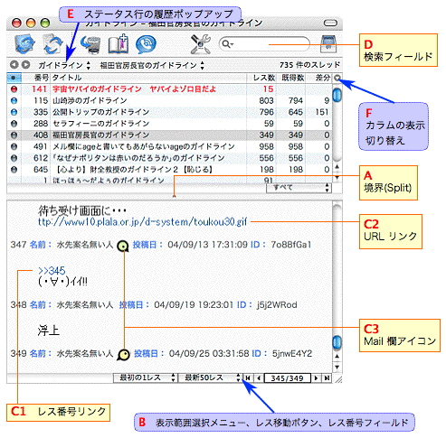

CocoMonar ヘルプ
CocoMonar ヘルプ
メインウインドウ
CocoMonar の典型的なウインドウを以下に示します。

ブラウザ
- 一覧とログの表示領域の比率を調整するには、境界（A）をドラッグします。
ログの表示領域を隠すには、境界をダブルクリックします。もっと詳しく
- ウインドウ下部には、表示範囲選択メニュー、レス移動ボタン、レス番号フィールド（B）があります。もっと詳しく
- レス番号（C1）にポインタを合わせると、レスがポップアップ表示されます。
ポップアップ内のテキストを選択するには、ポップアップ内で一度クリックします。ポップアップを消すには、マウスを動かします。
- URL（C2）をクリックすると、Web ブラウザで開きます。URL が 2ch スレッドの場合は、CocoMonar の新規ウインドウで開きます。
ヒント：画像ファイルへのリンクを option キーを押しながらクリックすると、画像が小さくプレビュー表示されます。
- メール欄アイコン（C3）にポインタを合わせると、メール欄がポップアップ表示されます（ageとsageはポップアップしません）。age、sage、その他の三種類のアイコンがあります。
ツールバーとステータス行
- ツールバーの検索フィールド(D)は、スレッド一覧からスレッドを検索するときに使います。もっと詳しく
- ステータス行（E）には、最近閲覧した掲示板・スレッドの履歴が表示されます。左のボタンを使って、Web ブラウザのように「進む」「戻る」こともできます。
- カラム横の▼ボタン（F）をクリックすると、スレッド一覧に表示させるカラムを選択できます（初期設定では表示されないカラムもあるので要チェックです）。